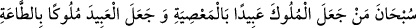

Görme cevherini benden aldın.
Madem ki o hatamı yaydın
Benden aldığını geri ver
Gönül esef dağından kurtulur
Yeter ki Yûsuf ’un bağından lâle toplayayım
Ve Yûsuf (a.s.)’ın Rabbi’ne îman etti. Sabah akşam Allah’ı zikretmeye başladı.
Bundan sonra yine bir gün Yûsuf mezkûr bineğine bindi. Atı kişneyince, herkes onun ata
bindiğini anlayarak gerek ihtişamını görmek, gerekse cemâlini seyredebilmek için
toplandı. Kişnemeyi Züleyhâ da duyarak kamış kulübesinden çıktı. Tam Yûsuf oradan
geçerken şöyle bağırdı:
“Günahları yüzünden kralları köle, tâatleri sayesinde de köleleri kral yapanı tesbih
ederim, o noksanlardan yücedir!”
Allah Teâlâ rüzgara bu sözü Yûsuf’un kulağına götürmesini emretti. O da bu sözü
Yûsuf (a.s.)’ın kulağına ulaştırdı.
Bu söz Yûsuf’a tesir etti ve ağlamaya başladı. Sesin geldiği tarafa döndü ve ihtiyar
kadını gördü. Kölesine:
“Git şu kadıncağızın ihtiyacı neyse hallet.” dedi. Köle:
“Neye ihtiyacın var.” deyince kadın:
“Benim ihtiyacımı ancak Yûsuf halleder.” cevabını verdi.
Bunu duyan köle, kadını Yûsuf’un kasrına götürdü. Yûsuf ise daha önce kasra gelir
gelmez krallık giysilerini çıkararak kıldan mâmûl bir gömlek giymiş ve ibâdethânesine
girip Allah’ı zikretmeye başlamıştı. Yaşlı kadını hatırlayarak kölesini çağırdı ve:
“O yaşlı kadına ne yaptın?” diye sordu. Köle:
“O kadın derdine sizden başkasının derman olamayacağını iddiâ ediyor.” deyince:
“Onu bana getir.” dedi.
Köle, kadını onun huzuruna getirdi. Yûsuf başını önüne eğmiş bir vaziyette iken kadın
ona selâm verdi.
Yûsuf da şefkatli bir şekilde selâmını aldıktan sonra: “Ey yaşlı hanım! Senden bir söz
duymuştum. Onu tekrarlar mısın?” dedi.
Kadın:
“Taatleri sayesinde köleleri kral, günahları yüzünden kralları köle yapanı tesbih
ederim, o noksanlardan yücedir!” demiştim dedi.
Yûsuf:
“Ne kadar güzel bir söz! Peki senin derdin nedir?” dedi.
Kadın:
“Ey Yûsuf, beni ne kadar da çabuk unuttun?!” deyince Yûsuf: